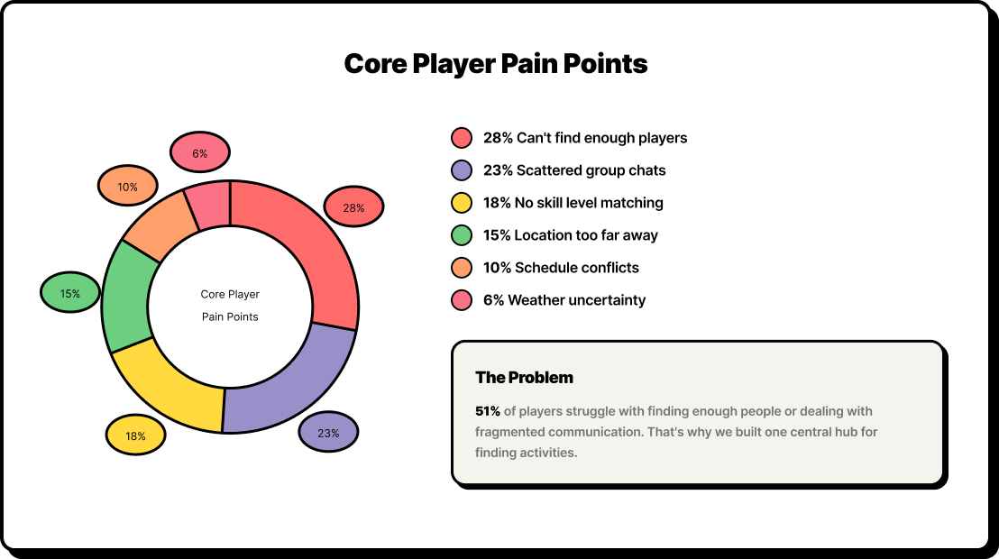
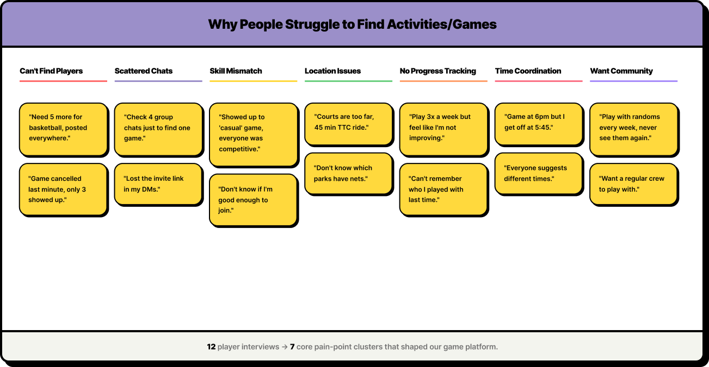
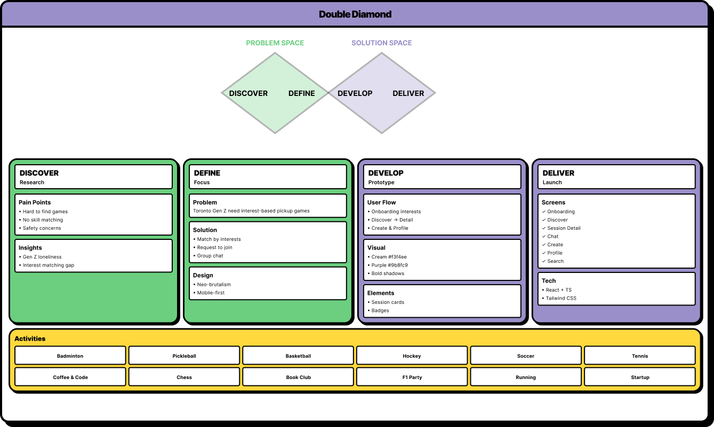

Design Process
Picture This
It's a crisp Toronto Saturday. Ryan, a 22-year-old CompSci student at UofT, loves pickleball. But every weekend? Same story. He texts his group chat: "Leaside courts free 7PM? Anyone?" Crickets. Or worse, five people say "maybe" and zero show up. Ryan sighs, grabs Netflix instead. This happens to 68% of young Canadians who crave local sports but can't coordinate to save their lives (StatsCan data).


Pain Points
I started where it hurts: talking to real people. Chatted with
people over coffee (virtually and Tim Hortons-style).
Ryan's story repeated: "I see courts on Instagram, but finding
3 reliable players + court time + payment? Nightmare."
Other person added: "Group chats die after 'yes,' and I end up
alone at the badminton court."
Affinity Mapping
I mapped it old-school: pen, paper, coffee stains. First
Discover (empathy), then Define (pain points).
Discover: Surveyed 80 students. 72% wanted weekly games. 65%
cited "coordination hell" as the killer.


Double Diamond
Grabbed my iPad, sketched like crazy.
40 rough ideas later: feeds, chats. Tested paper prototypes
with 5 friends—"Too many taps!"
Refined to core loop: Discover → Detail → Join → Chat.